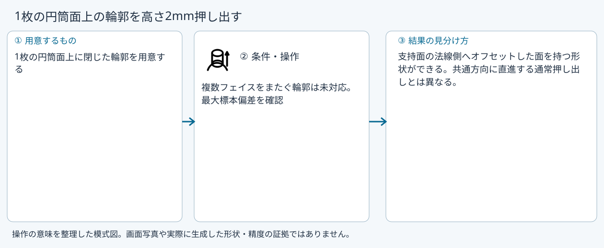
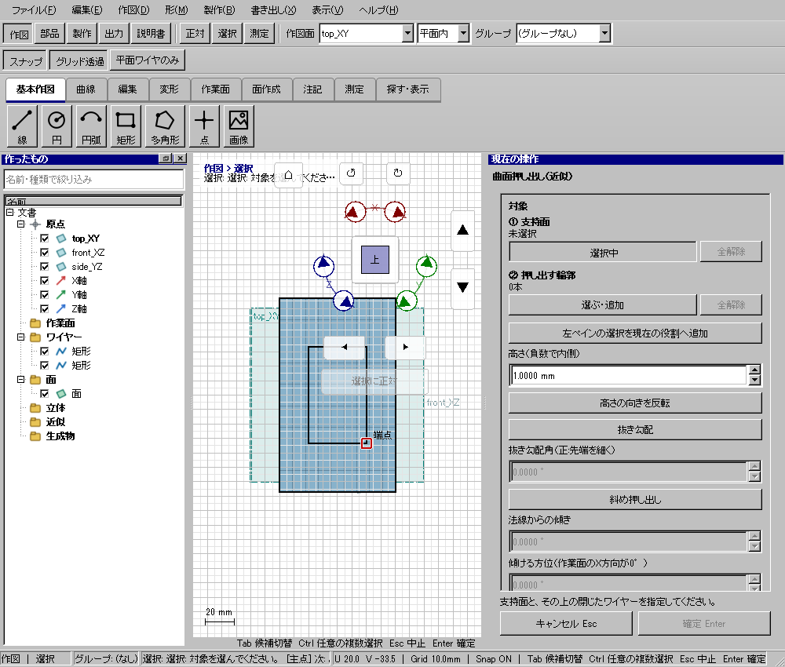

曲面押し出し
具体例: 1枚の円筒面上の輪郭を高さ2mm押し出す

準備
1枚の円筒面上に閉じた輪郭を用意する
操作手順
- 曲面押し出しを選ぶ
- 支持面1面とその上の輪郭を追加する
- 高さ2mm、抜き勾配と斜め押し出しオフで下見し、確定する
設定: 複数フェイスをまたぐ輪郭は未対応。最大標本偏差を確認
結果を確認
支持面の法線側へオフセットした面を持つ形状ができる。共通方向に直進する通常押し出しとは異なる。
取消・やり直し
未確定入力をEscで取り消します。道具を終えるときは選択(V)または別の道具へ切り替えます。 確定済みの文書変更はCtrl+Z、やり直しはCtrl+Yです。保存・書出し済みのファイルはUndoの対象ではありません。
進めない場合
文書がありません。
対象欄と3Dの強調を照合し、必要な線・面・部品を各役割へ指定します。処理中は計算表示を確認し、取消が可能な処理は取消を使います。
Windows版の操作画面
